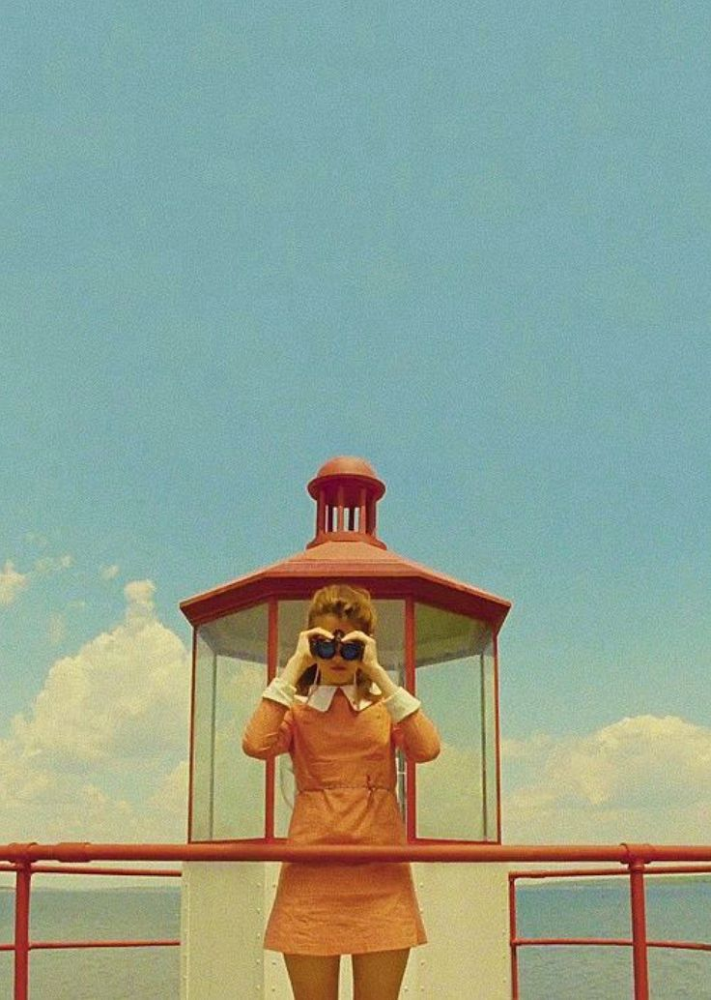
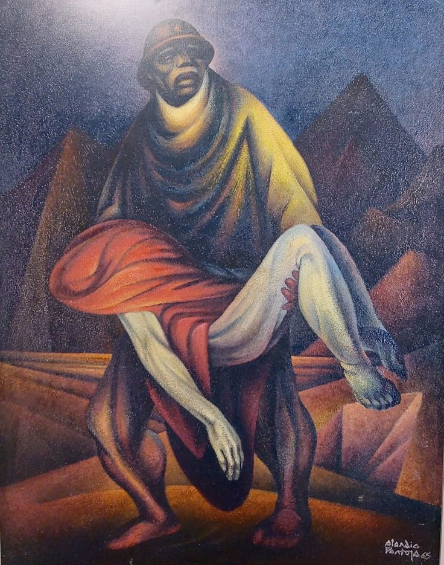
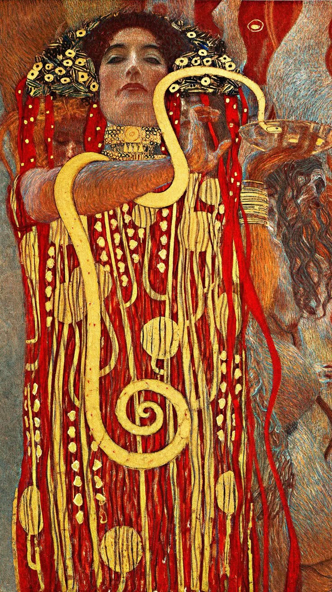
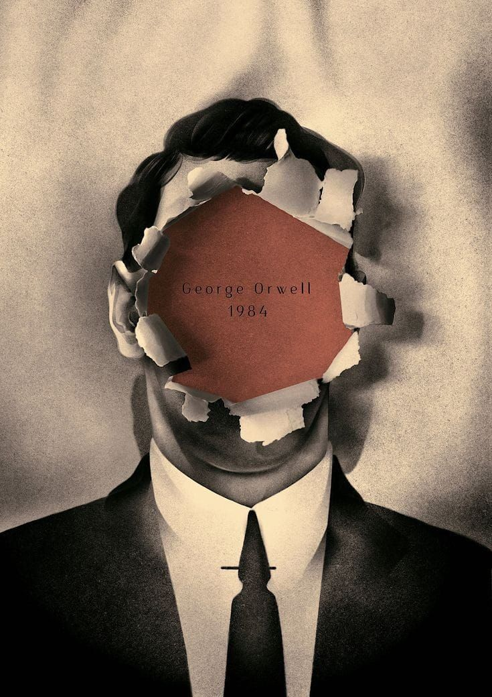
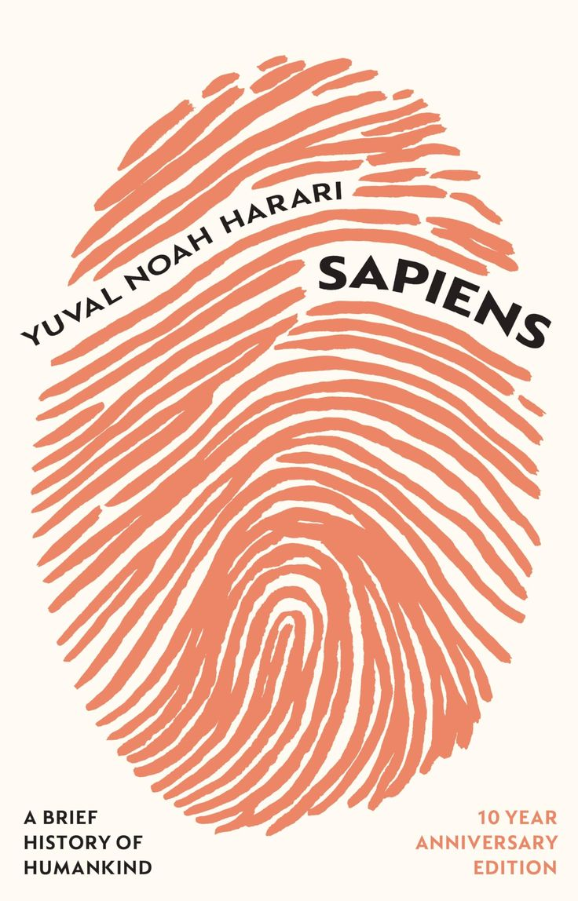
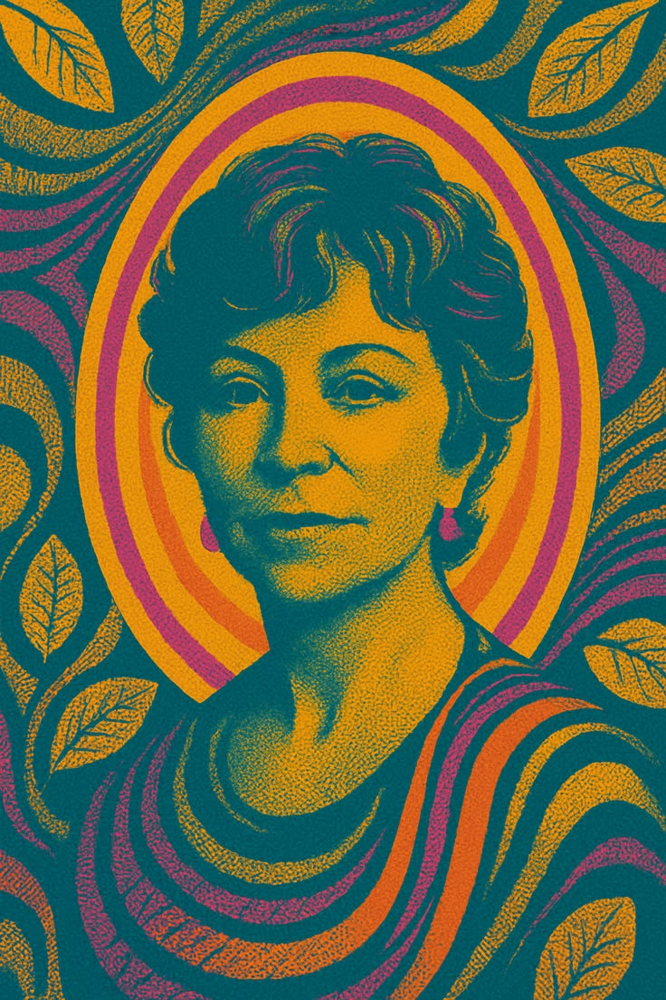

Presentación
- Nombre: Nicole Mariana Hernández Vertiz
- Frase: "La creatividad es lo que nos diferencia de otros animales."
- link de GitHub: GitHub
Sobre mí
¿Cómo podría descibirme? Creo que la autopercepción es una de las cualidades más dificiles que una persona podría explicar. Me gustaría empezar describiéndome como una persona curiosa sin más. Me apasiona conocer el mundio y comprenderlo. No quiero ser una persona pasiva que se conforma quejándose de que las cosas están mal. Odio conformarme con aspectos en los que no estoy de acuerdo. Es por eso que me apasiona el arte, siento que a través puedo exponer mis pensamientos sin hacer un revuelo.
Gustos de interés
- Diseño
- Arte y pintura
- Abejas
- Lectura
- Filosofía
Algo que me inspira
Wes Anderson

Miguel Alandia Pantoja

Gustav Klimt

Yuval Noah Harari

George Orwell

Isabel Allende
